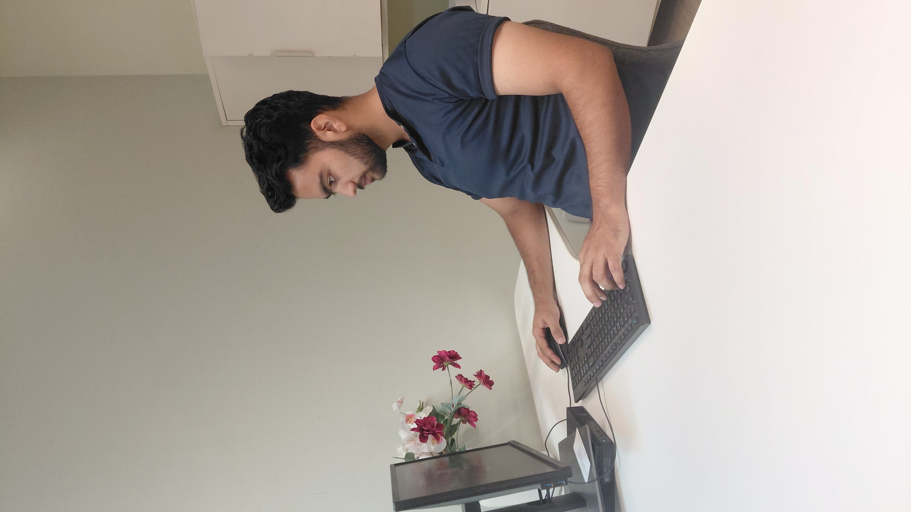

Software & product
Java, data structures, algorithms, software development, and early-stage product thinking.
Umair Farooq
IT STUDENT · DEVELOPER · CREATOR
I'm an Information Technology student at CBIT, Hyderabad, exploring software development, building communities, and creating meaningful conversations around technology, education, and careers.
CBIT Hyderabad
I’m pursuing a B.E. in Information Technology at Chaitanya Bharathi Institute of Technology (CBIT), Hyderabad. I enjoy the craft of software: learning Java, working through data structures and algorithms, and turning ideas into things people can use.
Beyond technology, I lead student communities, build institutional and corporate relationships, organize events, and host conversations about careers and ideas. I’m also interested in entrepreneurship and product development.
More about my workJava, DSA, software development, and growing knowledge of cloud technologies.
AWS Student Builder Club, partnerships, team coordination, and campus events.
Podcasting, technical presentations, and conversations about technology and careers.
I work across the product, the people around it, and the stories that help an idea move forward.
Java, data structures, algorithms, software development, and early-stage product thinking.
Student leadership, corporate and institutional relations, team coordination, and event organization.
Technical presentations, research exploration, podcast hosting, and content that makes ideas accessible.
I care about what happens around the technology, too: the people, partnerships, and moments that turn a campus into a community.
Student leadership, peer learning, and bringing more builders into the room.
Building relationships between student communities, institutions, and industry.
Planning the details and creating the energy for people to meet, learn, and share.
Previously led the CBIT student chapter, organizing orientations and technical meetups.
B.E. in Information Technology
Chaitanya Bharathi Institute of Technology (CBIT), Hyderabad
Relevant Coursework: C/C++ Programming, Data Structures, Circuit Analysis, Green Computing
Student Chapter Lead
Soft Computing Research Society (SCRS) at CBIT
Founded and lead the student chapter, organized orientation sessions and technical meetups
Engineering Life Journal
YouTube Channel: @Umairf313
I document my engineering life and share my thoughts about life based on my own understanding and experiences.
Green Computing Research
Paper presented at SUDHEE 2026
Satellite Imaging Project
Presented at Build Nation 2026 (National Level)
Console-based C++ application for managing book records with add, update, delete, and search functionalities
View RepoC++ application to simulate food ordering and management using structured programming
View RepoC++ program for currency conversion using predefined exchange rates and user input handling
View RepoCommand-line Multifunctional calculator using basics of C++ this is a basic Calculatorfor Addition , subtraction , multiplication, division, finding remainder, finding roots of quadratic , finding index of element in and 1D array, finding Palindrome , finding Armstrong number , checking Colinearity of points
View RepoC++ book management project that organizes records and applies sorting techniques for structured data handling
View RepoPODCASTS & CONTENT
I share the engineering journey and host conversations around technology, careers, growth, and the ideas worth spending time on.
Find me on YouTubeHave a project, an event, or an idea you’d like to explore together? I’d be glad to hear from you.